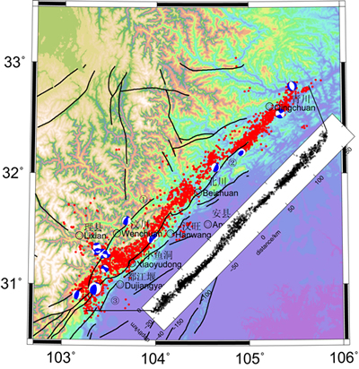

Utilizing the broad-band mobile seismic array observation data from the western Sichuan seismic network and the phase data from emergency seismic observation stations after the earthquake, the aftershock sequence of the Wenchuan earthquake was accurately relocated using the double-difference seismic relocation method. The phase data used for the relocation of the aftershock sequence is composed of the emergency mobile seismograph aftershock observation data provided by the Sichuan seismic network and the phase data picked up by the mobile seismic array in western Sichuan. To ensure the reliability of the phase data for the relocation of the aftershock sequence, seismic events from May 12, 2008, to September 26, 2008, were selected from the seismic catalog provided by the Sichuan seismic network, which provided the source depth, and events with high signal-to-noise ratios were chosen based on the waveform records of the western Sichuan array for seismic event localization research. To avoid the impact of difficult-to-pick and inaccurate first-phase arrivals on the relocation accuracy, we restricted the participation of stations with an epicentral distance of less than 100 km and set a minimum recording station number of 8 for each earthquake. The final number of stations used for aftershock relocation was 126, with 3920 seismic events, totaling 109705 phases. A notable feature of this study is the extensive use of near-field data from the western Sichuan mobile seismic array. The mobile seismic array in western Sichuan covers about 2/3 of the length of the aftershock distribution area, with over 30 stations within 100 km of the main shock epicenter of the Wenchuan earthquake, and an average station spacing of about 20 km. Its station density is close to the distribution density of the emergency mobile seismograph stations after the earthquake, especially on the hanging wall of the Wenchuan earthquake fault, providing a much-improved distribution rationality for the Sichuan seismic network and the emergency mobile seismograph stations after the earthquake on the hanging wall of the fault. This is of great significance for the precise location of aftershock sequences. The relocated results show that the aftershock sequence of the Wenchuan earthquake ruptured from the southern edge of the Pengguan complex to the north. The main shock and its aftershock rupture zone is about 350 km long, about 20-30 km wide in most areas, and has a northwest-trending branch exceeding 60 km in length in the direction of Xiaoyudong to Lixian. The majority of aftershocks are distributed within the thrust nappe of the Longmenshan fault zone, indicating that the post-earthquake rupture mainly occurred within the Longmenshan fault zone. The width and spatial morphology of the aftershock distribution along the fault zone show strong segmentation and non-uniform characteristics, clearly demonstrating the controlling effect of fault structure on aftershock activity. Taking the top of the low-velocity crustal layer of the Songpan-Ganzi block as the bottom boundary, the aftershocks are mainly distributed in the high-velocity crustal layer on the eastern edge of the Longmenshan, within the depth range of 4-24 km, with the dominant depth range being 10-20 km.
Relocated Aftershocks and Epicenter Distribution Map
Article Source: Geological Research Institute of China Earthquake Administration (Special Note: Any infringement issues will be promptly addressed upon contact for removal.)